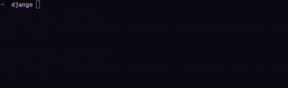

Locate: A Recurive Search Tool - RUST

How many times have you gone through files to find some string or origin of a function
Locate is a tool written in Rust which goes through each file recursively and gives exact location of the query string in the files.
Its blazing fast, as its written in Rust, and can recursively walk the directories.
Motivation
Okay so I wanted to learn Rust and I think the best way to learn a new language is by creating a project, I always used search function in VS code to find origin of a function or places where the function is used.
If working with large projects it sometimes becomes difficult to exactly locate all the points where a function is used, ofcourse one can follow the imports to trace back to origin of function but having a tool can be handy sometimes.
Note:- As this is my first project in Rust, so its a possibility that I have done certain things differently than it should be
So lets start
Create A New Package:
For starting a new package we do cargo new, as this is a binary program so
cargo new locate --bin
This creates a folder structure like
.
├── Cargo.toml
└── src
└── main.rs
1 directory, 2 files
Packages We Need:
fstream = "0.1.2"
walkdir = "2.3.1"
argparse = "0.2.2"
colored = "1.9"
- fstream: It will be used to read file
- walkdir: This will be used to iterate over all the folders and files
- argparse: Its a simple argparser to parse arguments
- colored: Will be used to colorize the terminal output
Add these to your cargo.toml:
Now our cargo.toml will look something like
[package]
name = "locate"
version = "0.1.0"
authors = ["Prakhar <b118038@iiit-bh.ac.in>"]
description = "A tool to search all the occurrences of a string in all the files in directory"
readme = "README.md"
repository = "https://github.com/pr4k/locate"
license-file = "LICENSE"
keywords = ["cli","search","rust"]
edition = "2020"
# See more keys and their definitions at https://doc.rust-lang.org/cargo/reference/manifest.html
[dependencies]
fstream = "0.1.2"
walkdir = "2.3.1"
argparse = "0.2.2"
colored = "1.9"
Main Code:
Our basic workflow will be first we will take path and query from user.
Then we need a function to iterate over all the folders in the path and check whether the query string is present in any file ,
If so the path of file will be passed to another function where the exact location of query string will be located.
Walking directory is easy as we will be using walkdir for that.
Code for checking dir:
fn check_dir(path: &str, query: &str) {
let mut total_files_scanned = 0;
for (fl_no, e) in WalkDir::new(path)
.into_iter()
.filter_map(|e| e.ok())
.enumerate()
{
if e.metadata().unwrap().is_file() {
match fstream::contains(e.path(), query) {
Some(b) => {
if b {
check_file(e.path(), query);
}
}
None => println!("Error in walking Dir"),
}
}
total_files_scanned = fl_no;
}
println!(
"Total Scanned files {}",
total_files_scanned.to_string().bold()
);
}
We create a new Walkdir on the path given and apply a filter to silence the permission error.
Next we check if the iter is a file then we are using fstrem to check whther the query string is in the file or not.
Once we get the file having query, its passed to another function which locates the exact line number.
Code for Checking file:
fn check_file(file_path: &Path, query: &str) {
println!(
"In file {}\n",
file_path.display().to_string().magenta().italic()
);
match fstream::read_lines(file_path) {
Some(s) => {
for (pos, s) in s.iter().enumerate() {
if s.contains(query) {
print!("{}", "Line ".green().bold());
print!("{0: <6} ", pos.to_string().cyan());
println!("=> {}", s.trim().blue());
}
}
}
None => println!("Error in reading File"),
}
println!("");
}
Its simple, we are reading the whole file line by line and as it returns a string vector, we can easily iterate over each line and check if the query string is present or not.
If present we are simply printing it, There is formatting for print, like .green(), .bold() etc which is done with the help of colored crate we imported earlier.
That’s all, we have code for both part, reading file and finding file.
What’s left is to parse arguments from command line. The library argparser is inspired by argparse in python.
Code for Argpase
fn main() {
let mut path = ".".to_string();
let mut query = "query".to_string();
{
let mut ap = ArgumentParser::new();
ap.set_description("Recursive string locater in files");
ap.refer(&mut path)
.add_option(&["-p", "--path"], Store, "Path to folder");
ap.refer(&mut query)
.add_option(&["-q", "--query"], Store, "Query string to find")
.required();
ap.parse_args_or_exit();
}
println!(
"Searching '{}' in {}\n",
query.green().bold(),
path.italic()
);
check_dir(&path, &query);
}
It is also pretty simple, we are creating two mutable varibale (Variable in rust are by default immutable), then we will be creating a new Argpaser object, set its description and create our options. The best thing is, it automatically generates the help message using our description for each option.
Done, Lets try it !!
Type cargo build You will find a binary created in target/debug,
You can run it directly by cargo run or using the binary you just created.
DEMO

You can find the whole source code at Github@pr4k/locate
Also if you don’t want to do all this, you can install it directly using
cargo install locate
or checkout at cargo@locate
Thanks for Reading Happy Coding